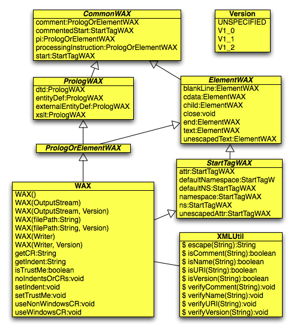

WAX Tutorial
WAX Limitations
WAX Details
Approaches Compared
Simple API for XML (SAX)
Document Object Model (DOM)
JDOM
Groovy
XMLStreamWriter
Conclusion
Download API (javadoc) WAX for JavaScript WAX for Ruby Interface Chaining pattern
|
|
Introduction WAX Tutorial WAX Limitations WAX Details Approaches Compared Simple API for XML (SAX) Document Object Model (DOM) JDOM Groovy XMLStreamWriter Conclusion |
A short video introduction ...
|
Inspiration ...
|
What's the best way to read a large XML document? Of course you'd use a SAX parser or a pull parser. What's the best way to write a large XML document? Building a DOM structure to describe a large XML document won't work because it won't fit in memory. Even if it did, it's not a simple API to use. There hasn't been a solution that is simple and memory efficient until now.
Writing API for XML (WAX) is a free, open-source, library
for writing XML documents.
I created it because I got an OutOfMemoryError
while trying to output a large XML document
from an application I wrote using JDOM,
another Java-based XML library.
I searched for other libraries
that could write large XML documents
but couldn't find any that were
as simple to use as I thought they should be.
WAX is released under the New BSD with the intention of making its use unencumbered. It is well-tested and ready for production use. The WAX home page is at http://www.ociweb.com/wax/. Java and Ruby versions are available now. The Java version of WAX can be downloaded from Google Code at http://code.google.com/p/waxy/. For information about the Ruby version, click here. Ports for other programming languages will follow.
WAX has the following characteristics:
This section provides many examples of using WAX. Each code snippet is followed by the output it produces.
When the no-arg WAX constructor is used,
XML is written to standard output.
There are also WAX constructors that take
a java.io.OutputStream
or a java.io.Writer object.
Here's a simple example where only a root element is written:
WAX wax = new WAX();
wax.start("car").close();
<car/>
After a WAX object is closed,
a new one must be created in order to write more XML.
In the examples that follow, assume that has been done.
Let's write a root element with some text inside:
wax.start("car").text("Prius").end().close();
<car>Prius</car>
The default indentation used is two spaces.
The end method terminates the element
that is started by the start method.
In this case it's not necessary to call end
because the close method
terminates all unterminated elements.
Let's put the text inside a child element:
wax.start("car").start("model").text("Prius").close();
<car> <model>Prius</model> </car>
Let's do the same with the
child convenience method:
which is equivalent to calling start,
text and end.
wax.start("car").child("model", "Prius").close();
<car> <model>Prius</model> </car>
Let's put text containing all the special XML characters in a CDATA section:
wax.start("car").start("model").cdata("1<2>3&4'5\";6").close();
<car>
<model>
<![CDATA[1<2>3&4'5"6]]>
</model>
</car>
Let's output the XML without indentation, on a single line:
wax.noIndentsOrLineSeparators();
wax.start("car").child("model", "Prius").close();
<car><model>Prius</model></car>
Let's indent the XML with four spaces instead of the default of two:
wax.setIndent(" "); // can also call setIndent(4)
wax.start("car").child("model", "Prius").close();
<car>
<model>Prius</model>
</car>
Let's add an attribute:
wax.start("car").attr("year", 2008).child("model", "Prius").close();
<car year="2008"> <model>Prius</model> </car>
Attributes must be specified before
any content for their element is specified.
For example, calling
start, attr and text is valid,
but calling
start, text and attr is not.
If this rule is violated then
an IllegalStateException is thrown.
Let's add an XML declaration:
WAX wax = new WAX(Version.V1_0); // Version is an enum
wax.start("car").attr("year", 2008)
.child("model", "Prius").close();
<?xml version="1.0" encoding="UTF-8"?> <car year="2008"> <model>Prius</model> </car>
Let's add a comment:
wax.comment("This is a hybrid car.")
.start("car").child("model", "Prius").close();<!-- This is a hybrid car. --> <car> <model>Prius</model> </car>
Let's add a processing instruction:
wax.processingInstruction("target", "data")
.start("car").attr("year", 2008)
.child("model", "Prius").close();<?target data?> <car year="2008"> <model>Prius</model> </car>
Let's associate an XSLT stylesheet with the XML:
The xslt method is a convenience method for adding
this commonly used processing instruction.
wax.xslt("car.xslt")
.start("car").attr("year", 2008)
.child("model", "Prius").close();
<?xml-stylesheet type="text/xsl" href="car.xslt"?> <car year="2008"> <model>Prius</model> </car>
Let's associate a default namespace with the XML:
wax.start("car").attr("year", 2008)
.defaultNamespace("http://www.ociweb.com/cars")
.child("model", "Prius").close();
<car year="2008" xmlns="http://www.ociweb.com/cars"> <model>Prius</model> </car>
Let's associate a non-default namespace with the XML:
String prefix = "c";
wax.start(prefix, "car").attr("year", 2008)
.namespace(prefix, "http://www.ociweb.com/cars")
.child(prefix, "model", "Prius").close();
<c:car year="2008" xmlns:c="http://www.ociweb.com/cars"> <c:model>Prius</c:model> </c:car>
Like attributes, namespaces must be specified
before any content for their element is specified.
If this rule is violated then
an IllegalStateException is thrown.
Let's associate an XML Schema with the XML:
wax.start("car").attr("year", 2008)
.defaultNamespace("http://www.ociweb.com/cars", "car.xsd")
.child("model", "Prius").close();
<car year="2008" xmlns="http://www.ociweb.com/cars" xmlns:xsi="http://www.w3.org/1999/XMLSchema-instance" xsi:schemaLocation="http://www.ociweb.com/cars car.xsd"> <model>Prius</model> </car>
Let's associate multiple XML Schemas with the XML:
wax.start("car").attr("year", 2008)
.defaultNamespace("http://www.ociweb.com/cars", "car.xsd")
.namespace("m", "http://www.ociweb.com/model", "model.xsd")
.child("m", "model", "Prius").close();
<car year="2008"
xmlns="http://www.ociweb.com/cars"
xmlns:m="http://www.ociweb.com/model"
xmlns:xsi="http://www.w3.org/1999/XMLSchema-instance"
xsi:schemaLocation="http://www.ociweb.com/cars car.xsd
http://www.ociweb.com/model model.xsd">
<m:model>Prius</m:model>
</car>
Let's associate a DTD with the XML:
wax.dtd("car.dtd")
.start("car").attr("year", 2008)
.child("model", "Prius").close();
<!DOCTYPE car SYSTEM "car.dtd"> <car year="2008"> <model>Prius</model> </car>
Let's add and use entity definitions:
String url = "http://www.ociweb.com/xml/";
wax.entityDef("oci", "Object Computing, Inc.")
.externalEntityDef("moreData", url + "moreData.xml")
.start("root")
.unescapedText("The author works at &oci; in St. Louis, Missouri.",
true) // avoiding escaping for entity reference
.unescapedText("&moreData;", true)
.close();
<!DOCTYPE root [ <!ENTITY oci "Object Computing, Inc."> <!ENTITY moreData SYSTEM "http://www.ociweb.com/xml/moreData.xml"> ]> <root> The author works at &oci; in St. Louis, Missouri. &moreData; </root>
A common usage pattern is to pass a
WAX object to a method of model objects
that use it to write their XML representation.
For example, a Car class could have the following method.
public void toXML(WAX wax) {
wax.start("car")
.attr("year", year)
.child("make", make)
.child("model", model)
.end();
}
An example of the XML this would produce follows:
<car year="2008"> <make>Toyota</make> <model>Prius</model> </car>
A Person class whose objects hold a reference to
an Address object could have the following method.
public void toXML(WAX wax) {
wax.start("person")
.attr("birthdate", birthdate)
.child("name", name);
address.toXML(wax);
wax.end();
}
The Address class could have the following method.
public void toXML(WAX wax) {
wax.start("address")
.child("street", street);
.child("city", city);
.child("state", state);
.child("zip", zip);
.end();
}
An example of the XML this would produce follows:
<person birthdate="4/16/1961">
<name>R. Mark Volkmann</name>
<address>
<street>123 Some Street</street>
<city>Some City</city>
<state>MO</state>
<zip>12345</zip>
</address>
</person>
WAX only helps with writing XML, not reading it. To read large XML documents, use a SAX parser (such as Xerces that comes with Java) or a pull parser (such as Woodstox) which is my preference.
WAX doesn't validate that the XML it outputs is valid according to some schema.
WAX shines when you need to output arbitrary XML that doesn't necessarily map cleanly to objects from existing Java classes. However, there are even simpler approaches if you are serializing Java objects into XML and will later want to deserialize the XML back to Java objects. My favorite of these is XStream. Another option is JAXB.
So what does WAX actually do?
WAX writes out bits of XML as calls are made. It doesn't buffer up the data in a data structure to be written out later, as is done in the DOM approach. Actually it does do this for five cases, none of which involve a large amount of data.
DOCTYPE
just before the root element start tag is output.
Once this is done, the list is cleared.
namespace method,
are held in a map.
This information is needed to construct
the value of the xsi:schemaLocation attribute.
After each start tag is completed, the map is cleared.
end method is invoked. This pops the name off the stack.
The close method calls end
for each name remaining on this stack in order to
terminate all unterminated elements.
It is not possible for WAX to output XML that isn't well-formed
without an exception being thrown,
unless you forget to call the close method
when finished.
If an exception is thrown then the tags already output
may not be terminated.
All exceptions thrown by WAX are runtime exceptions.
IOExceptions are wrapped by RuntimeException.
WAX keeps track of the current state of the document in order to provide extensive error checking. There are four states:
IN_PROLOG -
The start tag for the root element hasn't been output yet.IN_START_TAG -
The start tag of the current element has been written,
but the > or /> at the end hasn't been written yet
so attributes and namespace declarations can still be added.AFTER_START_TAG -
A > has been written at the end the start tag
for the current element so it's ready for content.AFTER_ROOT -
The root element has been terminated.
Only comments and processing instructions can be output now.
WAX uses the current state to determine whether
specific method calls are valid.
For example, if the state is IN_PROLOG,
it doesn't make sense to call the attr method.
That adds an attribute to an element,
but you haven't written any elements yet if you're still
in the prolog section of the XML document.
When the state is IN_START_TAG, many methods
trigger termination of the start tag. These include:
cdata, child, close,
comment, end,
processingInstruction, start
and text.
This happens because none of these things can be written
inside a start tag.
Methods that do not cause a start tag to be terminated include:
attr and namespace
because these are things that belong in a start tag.
WAX remembers the namespace declarations that are in-scope and verifies that only in-scope namespace prefixes are used on elements and attributes.
The close method terminates all unterminated elements
and closes the stream to which the XML is being written.
This is done so subsequent code can't write additional content
that would result in XML that isn't well-formed.
All methods that write a part of the XML output
return the WAX object on which they are invoked
to support method chaining.
Methods that configure WAX, including
setIndent and setTrustMe, do not.
When method chaining is used, compile-time type checking verifies
that each successive call is valid in the context of the previous call.
For example, it's not valid to call attr
immediately after calling text.
This is accomplished through a novel approach
suggested by
Brian Gilstrap
at OCI
that we are calling
Interface Chaining.
WAX methods that return the WAX object
return it as one of many interface types that are
implemented by the WAX class
rather than the WAX class type.
The interface returned describes only the WAX methods
that are valid to invoke next.
Note that this allows IDEs to flag invalid
method chaining call sequences as code is entered.
There is a downside to method chaining.
If a method in the chain throws an exception,
it may not be apparent which one threw it
since the chain could invoke the same method multiple times.
The following UML diagram conveys all the details behind this. Note the interface types that are implemented by the WAX class. Most WAX methods specify one of these interfaces as their return type.

In the next several sections, I'll compare several approaches for writing XML. For each approach, I'll produce the following XML, referred to as the "target XML." Note that it includes both a DOCTYPE (associating a DTD with the XML) and a schemaLocation attribute (associating an XML Schema with the XML). It's not normal to do both, but I want to demonstrate how both are accomplished.
<?xml version="1.0" encoding="UTF-8"?>
<?xml-stylesheet type="text/xsl" href="artist.xslt"?>
<!DOCTYPE artist SYSTEM "http://www.ociweb.com/xml/music.dtd">
<artist name="Gardot, Melody">
xmlns="http://www.ociweb.com/music"
xmlns:date="http://www.ociweb.com/date"
xmlns:xsi="http://www.w3.org/1999/XMLSchema-instance"
xsi:schemaLocation="http://www.ociweb.com/music http://www.ociweb.com/xml/music.xsd
http://www.ociweb.com/date http://www.ociweb.com/xml/date.xsd">
<!-- This is one of my favorite CDs! -->
<cd year="2008">
<title>Worrisome Heart</title>
<date:purchaseDate>4/3/2008</date:purchaseDate>
</cd>
</artist>
Here's the WAX code that produces the example XML above.
import com.ociweb.xml.WAX;
public class CDDemo {
public static void main(String[] args) {
// Write to System.out with an XML declaration that specifies version 1.0.
// If the version is omitted then no XML declaration will be written.
WAX wax = new WAX(WAX.Version.V1_0);
wax.xslt("artist.xslt")
.dtd("artist", "http://www.ociweb.com/xml/music.dtd")
.start("artist").attr("name", "Gardot, Melody")
.defaultNamespace("http://www.ociweb.com/music",
"http://www.ociweb.com/xml/music.xsd")
.namespace("date", "http://www.ociweb.com/date",
"http://www.ociweb.com/xml/date.xsd")
.comment("This is one of my favorite CDs!")
.start("cd").attr("year", 2008)
.child("title", "Worrisome Heart")
.child("date", "purchaseDate", "4/3/2008")
.close(); // terminates all unterminated elements
}
}
This is much more compact and understandable than any other approach I have seen.
Readers familiar with SAX, the Simple API for XML,
may have noticed a similarity between WAX methods
and those in the SAX ContentHandler interface
(processingInstruction,
startElement,
characters,
endElement,
startPrefixMapping and
endPrefixMapping).
SAX is normally used for reading XML.
However, it can also be used to write XML
when it is used in conjunction with the Transformation API for XML (TrAX).
TrAX is supported out of the box with Java
in the javax.xml.transform package.
Unfortunately, writing XML with SAX is a bit complicated.
First, you need to write a class that acts as a custom
org.xml.sax.XMLReader.
That's an interface with a lot of methods to be implemented.
This can be simplified by instead writing a class that extends
org.xml.sax.helpers.XMLFilterImpl.
The example that follows uses many private convenience methods
that greatly simplify the code in the parse method.
import java.util.HashMap;
import java.util.Map;
import org.xml.sax.*;
import org.xml.sax.helpers.AttributesImpl;
public class CustomXMLReader extends org.xml.sax.helpers.XMLFilterImpl {
private AttributesImpl attrs = new AttributesImpl();
private ContentHandler contentHandler;
private Map<String, String> prefixToURIMap = new HashMap<String, String>();
@Override
public void setContentHandler(ContentHandler contentHandler) {
this.contentHandler = contentHandler;
}
@Override
public void parse(InputSource input) throws SAXException {
contentHandler.startDocument();
contentHandler.processingInstruction(
"xml-stylesheet", "type=\"text/xsl\" href=\"artist.xslt\"");
String musicURI = "http://www.ociweb.com/music";
String musicXSD = "http://www.ociweb.com/xml/music.xsd";
String dateURI = "http://www.ociweb.com/date";
String dateXSD = "http://www.ociweb.com/xml/date.xsd";
startNamespace("", musicURI);
startNamespace("date", dateURI);
startNamespace("xsi", "http://www.w3.org/1999/XMLSchema-instance");
attr("xsi", "schemaLocation",
musicURI + ' ' + musicXSD + ' ' + dateURI + ' ' + dateXSD);
attr("name", "Gardot, Melody");
start("artist");
attr("year", 2008);
start("cd");
start("title");
characters("Worrisome Heart");
end("title");
start("date", "purchaseDate");
characters("4/3/2008");
end("date", "purchaseDate");
end("cd");
end("artist");
endNamespace("date");
endNamespace("");
contentHandler.endDocument();
}
private void attr(String name, Object value) {
attr("", name, value);
}
private void attr(String prefix, String localName, Object value) {
String uri = prefixToURIMap.get(prefix);
String qName =
prefix.length() == 0 ? localName : prefix + ':' + localName;
attrs.addAttribute(uri, localName, qName, "CDATA", value.toString());
}
private void characters(String text) throws SAXException {
char[] chars = text.toCharArray();
contentHandler.characters(chars, 0, chars.length);
}
private void end(String name) throws SAXException {
end("", name);
}
private void end(String prefix, String localName)
throws SAXException {
String uri = prefixToURIMap.get(prefix);
String qName =
prefix.length() == 0 ? localName : prefix + ':' + localName;
contentHandler.endElement(uri, localName, qName);
}
private void endNamespace(String prefix) throws SAXException {
prefixToURIMap.remove(prefix);
contentHandler.endPrefixMapping(prefix);
}
private void start(String name) throws SAXException {
start("", name);
}
private void start(String prefix, String localName) throws SAXException {
String uri = prefixToURIMap.get(prefix);
String qName =
prefix.length() == 0 ? localName : prefix + ':' + localName;
contentHandler.startElement(uri, localName, qName, attrs);
attrs.clear();
}
private void startNamespace(String prefix, String uri) throws SAXException {
prefixToURIMap.put(prefix, uri);
contentHandler.startPrefixMapping(prefix, uri);
}
}
Second, you need to write a class that uses JAXP to
"transform" SAX events from the custom XMLReader
into XML output.
Here's an example.
import java.io.OutputStreamWriter;
import javax.xml.transform.*;
import javax.xml.transform.sax.SAXSource;
import javax.xml.transform.stream.StreamResult;
import org.xml.sax.SAXException;
public class SAXWriter {
public static void main(String[] args) throws SAXException,
TransformerConfigurationException, TransformerException {
SAXSource source = new SAXSource();
// Note use of the custom XMLReader here.
source.setXMLReader(new CustomXMLReader());
TransformerFactory tf = TransformerFactory.newInstance();
tf.setAttribute("indent-number", 2);
Transformer transformer = tf.newTransformer();
transformer.setOutputProperty(OutputKeys.INDENT, "yes");
// Using a Writer is key to getting indentation to work!
Result result =
new StreamResult(new OutputStreamWriter(System.out));
transformer.transform(source, result);
}
}
As complicated as the above code is, it would be even more complicated to get it to output the DOCTYPE and comment that are in our target XML, so I skipped those. This code produces the output below. The start tag, including all the namespace declarations and the schemaLocation attribute is written on one long line. I've split it up using a backslash ("\") to indicate line continuation in order to make it easier to read. That's not in the real XML.
<?xml version="1.0" encoding="UTF-8"?>
<?xml-stylesheet type="text/xsl" href="artist.xslt"?>
<artist; \
xsi:schemaLocation="http://www.ociweb.com/music http://www.ociweb.com/xml/music.xsd \
http://www.ociweb.com/date http://www.ociweb.com/xml/date.xsd" \
name="Melody Gardot" xmlns:date="http://www.ociweb.com/date" \
xmlns:xsi="http://www.w3.org/1999/XMLSchema-instance">
<cd year="2008">
<title>Worrisome Heart</title>
<date:purchaseDate>4/3/2008</date:purchaseDate>
</cd>
</artist>
Clearly using WAX to write XML is much easier than using SAX and TrAX.
There's another issue with this approach. It doesn't stream the output!
Instead the Transformer uses SAX events from
the SAXSource to build an in-memory DOM tree.
I had hoped to avoid that by using a SAXSource. No such luck!
DOM is a programming language neutral API for reading and writing XML. It is defined by a W3C recommendation. DOM doesn't stream XML when writing it. Instead, it builds an in-memory data structure that is later written as XML to a destination. This makes it unsuitable for writing large XML documents.
The next library discussed, JDOM, is an attempt to create a similar library that is specific to Java and is much easier to use. Rather than show example DOM code, I'll show example JDOM code in the next section. It is much shorter and simpler than the equivalent DOM code would be.
For more information on DOM, visit http://www.w3.org/DOM/.
JDOM is a free, open source, Java library for reading and writing XML. It can be obtained from http://www.jdom.org/.
Like DOM, JDOM doesn't stream XML when writing it. Instead, it builds an in-memory data structure that is later written as XML to a destination. This makes it unsuitable for writing large XML documents. Here's an example that outputs the target XML.
import java.io.IOException;
import org.jdom.*;
import org.jdom.output.*;
public class CDDemo {
public static void main(String[] args) throws IOException {
// Create namespaces to be used.
String url = "http://www.ociweb.com/";
Namespace dateNS = Namespace.getNamespace("date", url + "date");
Namespace musicNS = Namespace.getNamespace(url + "music");
Namespace xsiNamespace = Namespace.getNamespace(
"xsi", "http://www.w3.org/1999/XMLSchema-instance");
String rootName = "artist";
// Create the Document.
Document doc = new Document();
doc.addContent(new ProcessingInstruction(
"xml-stylesheet", "type=\"text/xsl\" href=\"artist.xslt\""));
doc.setDocType(new DocType(rootName, url + "xml/music.dtd"));
// Create the root element and define namespaces.
Element root = new Element(rootName);
doc.setRootElement(root);
root.setNamespace(musicNS); // sets default namespace
root.addNamespaceDeclaration(dateNS);
root.addNamespaceDeclaration(xsiNamespace);
// Associate XML Schemas with this XML.
String schemaLocation =
musicNS.getURI() + url + "xml/music.xsd " +
dateNS.getURI() + url + "xml/date.xsd";
root.setAttribute("schemaLocation", schemaLocation, xsiNamespace);
// Create other elements and attributes.
root.setAttribute("name", "Gardot, Melody");
root.addContent(new Comment(" This is one of my favorite CDs! "));
Element cd = new Element("cd", musicNS);
cd.setAttribute("year", "2008");
root.addContent(cd);
cd.addContent(
new Element("title", musicNS).setText("Worrisome Heart"));
Element purchaseDate =
new Element("purchaseDate", dateNS).setText("4/3/2008");
cd.addContent(purchaseDate);
// Output the XML.
XMLOutputter xo = new XMLOutputter(Format.getPrettyFormat());
xo.output(doc, System.out);
}
}
While this code is much shorter and is easier to understand than the equivalent DOM code would be, it pales in comparison to the earlier WAX code.
Groovy "builder" classes can write XML.
Two to consider are MarkupBuilder
and StreamingMarkupBuilder.
While both can output XML, they have limitations.
MarkupBuilder can't do the following:
Here's an example of using MarkupBuilder
to output the target XML.
import groovy.xml.MarkupBuilder // Pass an IndentPrinter to the MarkupBuilder constructor // in order to output indented XML. // Without this all the XML will be on a single line. // Even with this, long sequences of attributes are not indented. // A PrintWriter can be passed to the IndentPrinter constructor. // Without that it writes to standard output. def builder = new MarkupBuilder(new IndentPrinter()) def url = 'http://www.ociweb.com' builder.artist( xmlns : "${url}/music", 'xmlns:date' : "${url}/music/date", 'xmlns:xsi' : 'http://www.w3.org/1999/XMLSchema-instance', 'xsi:schemaLocation' : "${url}/music ${url}/xml/music.xsd ${url}/date ${url}/xml/date.xsd", name : 'Gardot, Melody') { cd(year : '2008') { title('Worrisome Heart') 'date:purchaseDate'('4/3/2008') } }
This code produces the output below. Again, I've split it up using a backslash ("\") to indicate line continuation in order to make it easier to read. That's not in the real XML.
<artist xmlns='http://www.ociweb.com/music' \
xmlns:date='http://www.ociweb.com/music/date' \
xmlns:xsi='http://www.w3.org/1999/XMLSchema-instance' \
xsi:schemaLocation='http://www.ociweb.com/music http://www.ociweb.com/xml/music.xsd \
http://www.ociweb.com/date http://www.ociweb.com/xml/date.xsd' name='Gardot, Melody'>
<cd year='2008'>
<title>Worrisome Heart</title>
<date:purchaseDate>4/3/2008</date:purchaseDate>
</cd>
</artist>
StreamingMarkupBuilder doesn't provide special methods
for doing the following:
unescaped method)xsi namespace declaration
and the xsi:schemaLocation attribute)
Here's an example of using StreamingMarkupBuilder
to output the target XML.
A big thank you goes out to Mike Easter,
of Code To Joy fame,
for writing this!
import groovy.xml.StreamingMarkupBuilder
def builder = new StreamingMarkupBuilder()
builder.encoding = 'UTF-8'
def url = 'http://www.ociweb.com'
def artist = {
artist('xsi:schemaLocation' :
"${url}/music ${url}/xml/music.xsd ${url}/date ${url}/xml/date.xsd",
name : 'Gardot, Melody') {
mkp.comment(' This is one of my favorite CDs! ')
cd(year : '2008')
title('Worrisome Heart')
date.purchaseDate('4/3/2008')
}
}
def xmlDoc = {
mkp.xmlDeclaration()
mkp.pi("xml-stylesheet" : 'type="text/xsl" href="artist.xslt"')
unescaped << "\n<!DOCTYPE cd SYSTEM \"${url}/xml/music.dtd\">\n"
mkp.declareNamespace('' : "${url}/music")
mkp.declareNamespace('date' : "${url}/date")
mkp.declareNamespace('xsi' : "http://www.w3.org/1999/XMLSchema-instance")
out << artist
}
// Note that the code in xmlDoc and cd isn't executed until bind is invoked.
println builder.bind(xmlDoc)
This code produces the output below. Again, I've split it up using a backslash ("\") to indicate line continuation in order to make it easier to read. That's not in the real XML.
<?xml version="1.0" encoding="UTF-8"?>
<!-- This is one of my favorite CDs! -->
<!DOCTYPE cd SYSTEM "${url}/xml/music.dtd">
<?xml-stylesheet type="text/xsl" href="artist.xslt"?>
<artist xsi:schemaLocation='http://www.ociweb.com/music http://www.ociweb.com/xml/music.xsd \
http://www.ociweb.com/date http://www.ociweb.com/xml/date.xsd' \
name='Gardot, Melody' xmlns:xsi='http://www.w3.org/1999/XMLSchema-instance' \
xmlns='http://www.ociweb.com/music' xmlns:date='http://www.ociweb.com/date'> \
<cd year='2008'/><title>Worrisome Heart</title> \
<date:purchaseDate>4/3/2008</date:purchaseDate></cd></artist>
The Groovy code is certainly more compact and easier to understand than the SAX code. However, it isn't as clear as the WAX code and suffers from several limitations.
XMLStreamWriter is a class in the
javax.xml.stream package that is included in Java 6.
To use it with Java 5, download Woodstox from
http://woodstox.codehaus.org/.
The following code uses XMLStreamWriter
to produce the target XML.
import javax.xml.stream.XMLOutputFactory;
import javax.xml.stream.XMLStreamException;
import javax.xml.stream.XMLStreamWriter;
public class CDDemo {
public static void main(String[] args) throws XMLStreamException {
XMLOutputFactory factory = XMLOutputFactory.newInstance();
// Output destination can be specified with an OutputStream or Writer.
XMLStreamWriter xsm = factory.createXMLStreamWriter(System.out);
String url = "http://www.ociweb.com/";
xsm.setPrefix("date", url + "date");
xsm.writeStartDocument(); // writes XML declaration
xsm.writeProcessingInstruction(
"xml-stylesheet", "type=\"text/xsl\" href=\"artist.xslt\"");
String root = "artist";
String doctype =
"<!DOCTYPE " + root + " SYSTEM \"" + url + "xml/music.dtd\">";
xsm.writeDTD(doctype);
xsm.writeStartElement(root);
xsm.writeDefaultNamespace(url + "music");
xsm.writeNamespace("date", url + "xml/date.xsd");
xsm.writeNamespace("xsi", "http://www.w3.org/1999/XMLSchema-instance");
xsm.writeAttribute("xsi:schemaLocation",
url + "music " + url + "xml/music.xsd " +
url + "date " + url + "xml/date.xsd");
xsm.writeAttribute("name", "Gardot, Melody");
xsm.writeComment(" This is one of my favorite CDs! ");
xsm.writeStartElement("cd");
xsm.writeAttribute("year", "2008");
xsm.writeStartElement("title");
xsm.writeCharacters("Worrisome Heart");
xsm.writeEndElement();
xsm.writeStartElement(url + "date", "purchaseDate");
xsm.writeCharacters("4/3/2008");
xsm.close(); // terminates unterminated elements just like WAX
}
}
This approach is much closer to the WAX approach
than the others examined here.
However, there are several issues with XMLStreamWriter.
write* method order.writeAttribute is longer than WAX's attr.Being the author of WAX, perhaps I'm a bit biased. I think it's clear that WAX is easier to use than the other approches examined here. Another important characteristic of WAX is that it uses very little memory compared to other approaches. I'd love to hear about other approaches I should have considered. Feel free to send me email at mark@ociweb.com.
"Thanks for writing WAX - it's made a *huge* productivity difference in writing formatted XML files. Without a doubt, it's the best API I've used for expressing XML in an intelligible straightforward manner." -- Chris Colclough, Johns Hopkins University Applied Physics Lab, Laurel, MD
"Wow! Looks like writing XML is easy." -- Adam Schmitz, age 10
"This is an incredible product. I'm using it to build my whole business." -- Marie Tussaud
"Underlies the success of whole product lines at our company" -- Robert W. Johnson of SC Johnson
"A shining example of successful application." -- George Simons, Simoniz
Copyright © 2008 Object Computing, Inc. All rights reserved.